Similar to other main sequence stars, hydrogen nuclei will be fused to helium nuclei in the core. However, the massive star will have a shorter life span, for example, a 15 solar mass star can only survive for about 10 million years. Because of the large mass, after the hydrogen burning, the temperature and pressure of the core are high enough to trigger helium burning to carbon, and a hydrogen burning shell is developed around the core. The helium will burn steadily and the higher energy production rate will heat up the star. The star will swell to a size even larger than a red giant and we have a red supergiant.
A typical red supergiant could be about 100 times larger than the red giant. Its surface temperature is low while the total luminosity remains high, with absolute magnitude up to -12 (comparing to 4.8 of our Sun).
Similar to the helium burning, the strong gravitational force of the star ignites and controls the carbon burning in the core; light nuclei fuse into heavier and heavier elements, until iron. We believe the heavy elements, like oxygen, nitrogen and silicon, found on Earth were made in a star somewhere long time ago by this mechanism. Elements heavier than iron cannot be made in this way. Iron is, in fact, the dead end of nuclear reaction. When hydrogen is fused to helium, energy is produced. However, we have to supply energy to fuse iron to even heavier elements. This is why we can split a heavy nucleus, like uranium, into several smaller ones to produce energy.
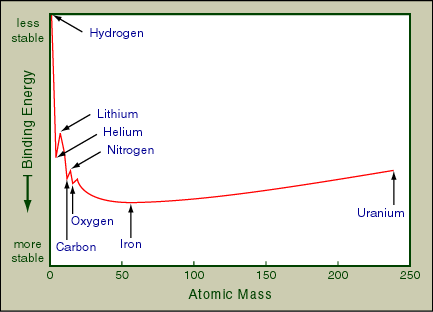
Iron burning cannot happen since it takes energy to do so. Therefore, as more and more iron is formed in the core, the pressure there decreases rapidly. After enough iron in the core is accumulated, within one hundredth second, the inner core collapses and heats up dramatically. All fuel, if not burnt up yet, will fuse to iron and nickel. The outer core will also collapse with the inner core. Electrons will react with protons to form neutrons and neutrinos. (Neutrino is an electrically neutral subatomic particle, which has very little interaction with any other matters. Hence, the star will be transparent to them.) Most of the energy generated by the collapse is carried away by neutrinos.
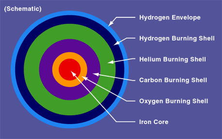
Because of the upper limit of the nuclear density, which prevents the core to compress too far, the collapsing inner core will bounce back outwards. This out-going inner core will collide with the in-coming outer core, which is collapsing rapidly. This collision will send off shock waves and create heavy elements, like uranium. Also, the outer layers of the star will be thrown off to space. This is a Type II supernova explosion.
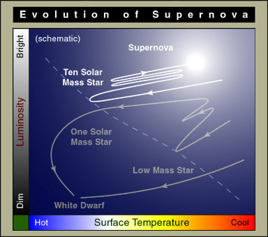
Supernova explosion is extremely violent. The brightness of the star will increase by up to 15 magnitudes. This will be a spectacular astronomical event. The most recent supernova visible by naked eyes was the SN1987A, which is located in a small nearby galaxy, the Large Magellanic Cloud. Unfortunately, the Large Magellanic Cloud is near the south celestial pole and is not visible in Hong Kong.
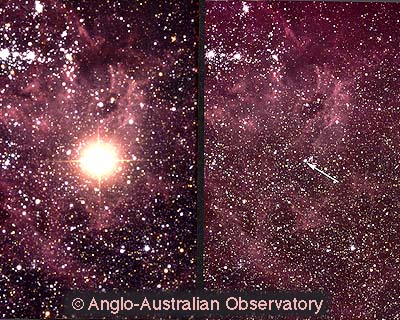 |
| (C) Anglo-Australian Observatory and Photograph by David Malin. |
Another famous supernova was recorded in 1054 A.D. by Chinese astronomers in the Sung dynasty. They discovered a "guest star" in where we now call the Taurus region. That star was visible in day-time for about two months.
The remnant of that supernova, which contains the material ejected from the exploded star, becomes the Crab Nebula, or M1. M1 is visible through a small telescope. Today, the Crab Nebula is still expanding and it will eventually dissolve in the interstellar gas cloud nearby.
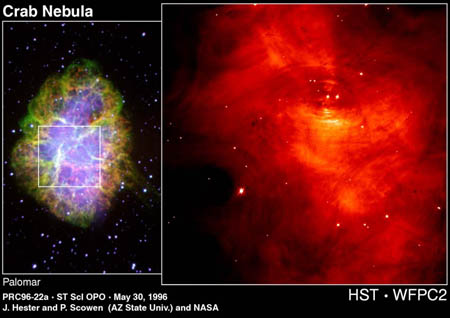 |
| Courtesy STScI. |
Over a thousand supernovae are discovered each year. However, they are not in our galaxy and usually very dim. Here is one in M51 in 1994.
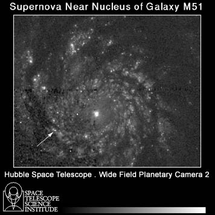 |
| Courtesy STScI. |
What will happen to the remains of the supernova explosion? It depends on the mass of the core left. After the explosion, if the mass left is less than 1.4 solar masses, a white dwarf will form. If it is between 1.4 to about 3 solar masses, a neutron star will form. If it is more massive, a black hole will be there. The following table schematically shows the path of the death of a star.
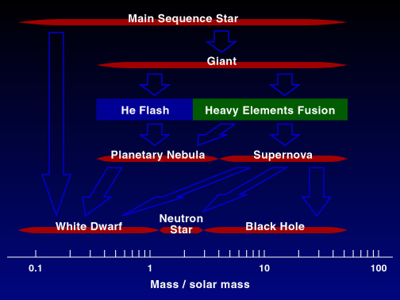
A neutron star composes mostly of neutrons, about 95-99%. Yet there is a trace amount of electrons and protons. Its typical size is about 8 to 16 km in radius, which is roughly the size of Hong Kong Island. Since the gravitational field on the surface is very strong, no hills or mountains can be formed on a neutron star.
We believe there is a solid crust of heavy nuclei, which is about 1 km thick. Below it is a layer of neutrons in liquid state. There may be a solid core, but we are not sure.
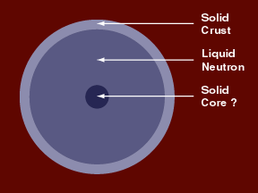
Another very important property of neutron star is its strong magnetic field. It ranges from 108 to 1015 times the magnetic field on the surface of the Earth. When electrons move in spirals around magnetic lines of force, radio waves are produced and radiated out along the two magnetic poles of the star.
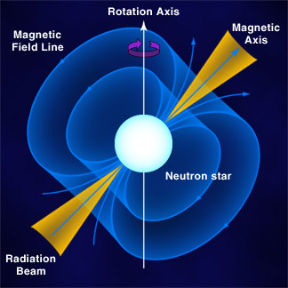
Usually, the rotational axis of the neutron star does not align with the magnetic axis. The radiation beams will sweep around and create the light house effect. What we observe on Earth will be pulses of radio wave with very stable period. This is a pulsar --- one can be found at the center of the Crab Nebula.
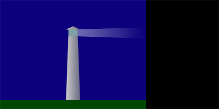
When signals from pulsars were discovered in 1960s, we thought they came from some other civilizations. Later on, we knew that this is not the case. But this raises another question: The rotational period could be as fast as a few milliseconds, which we call the millisecond pulsars. What kind of objects can rotate so fast without flying apart? The strong gravitational field of a neutron star provides the answer.
Due to their large masses, their rotational periods are very regular. We can specify the periods of some pulsars up to more than ten decimal places. This allows us to study the small disturbances around the star. For example, if there is a planet orbiting around the neutron star, it will wobble a little and the pulses will come a little early or late. We can then deduce the mass and the radius of the orbit of the planet from the arrival time of the pulses. This is how the first extrasolar planet is discovered.
The above discussion concentrates on the single star system. There are many interesting phenomena in a neutron star binary system. We will just mention one. If the companion of the neutron star is a giant, material will be transferred from the giant to the neutron star. X-rays will be emitted and a X-ray pulsar is formed.
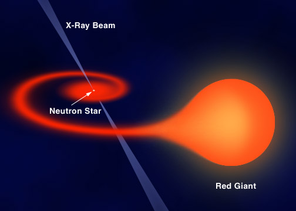